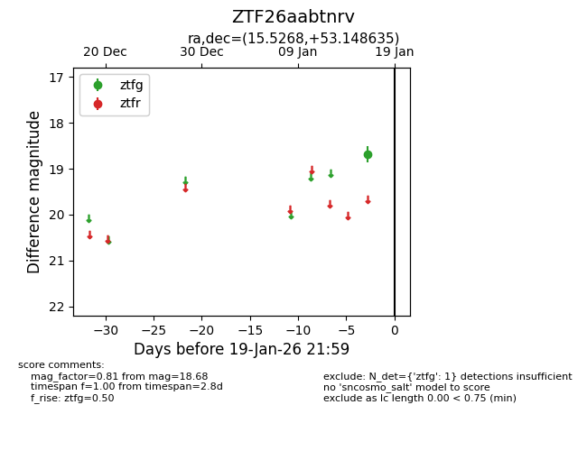
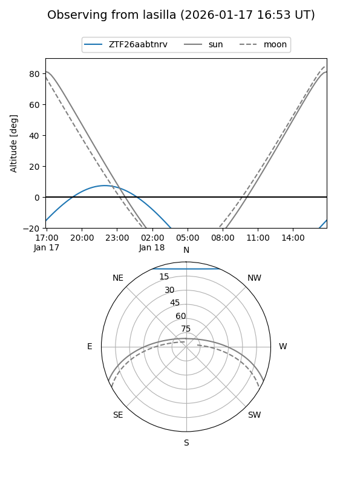
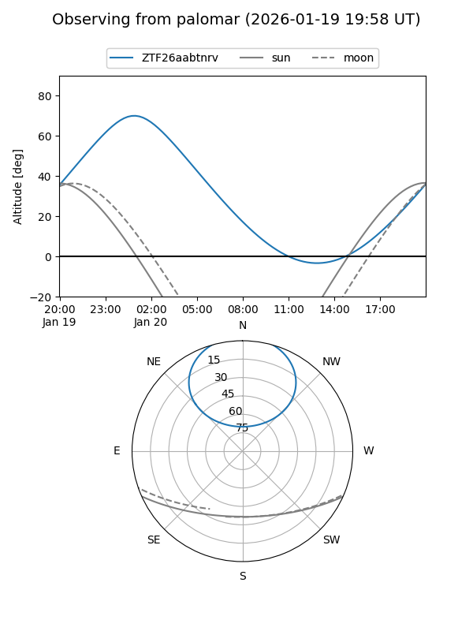

ZTF26aabtnrv
Target ZTF26aabtnrv at 2026-01-17 21:55
Aliases and brokers:
FINK: link
Lasair: link
ALeRCE: link
alt names
ZTF26aabtnrv (ztf,fink_ztf)
Coordinates:
equatorial (ra, dec) = 15.5268,+53.14864
equatorial (HMS+DMS) = 01:02:06.42,+53:08:55.09
galactic (l, b) = (124.5544,-9.68950)
Flags:
Photometry:
last ztfg=18.68
1 ztfg detections
Lightcurve

Visibility


Additional plots